Nunca senti tanto hype.
O começo do ano foi real a comunidade esperando alguma novidade da junção das versões enquanto o jp teria o aniversário, só isso.
")
2024 começando com o real maior card de todos os tempos.
Antes que eu comece a ironizar tudo, o trunks é inexplicavelmente horrível na forma base, ele é todo travado por condições bestas que só atrapalham ele.
Agora, continuando, o trunks é o melhor card do jogo, pra começar ele tem 50% DE CHANCE DE DEFESA ATIVA, e essa defesa ativa ainda é condicional, só com 3 aliados android/cell saga no time, QUE INCRÍVEL
Ele ainda fica efetivo contra tudo contra um INIMIGO CHAMADO CELL, WOW QUANTOS BOSSES CELL NÓS TEMOS NÉ???? O TRUNKS DESTRÓI TODOS TODOS
Por sinal o buff ali dos aliados tmb dá pra ele um adicional de 70% e 100% de ATK e DEF, então ele é realmente travado a esse time e nada mais
E olha só! Acabou o kit dele, ele só tem isso
Parabéns trunks, sua forma base é muito absurda já pra competir com o resto do jogo, ainda mais que mesmo com a defesa ativa ele ainda não consegue tankar nada
Mas claro, o card não estaria completo sem uma condição horrível de transformação né?
Boa sorte tentando atacar 5 vezes pra finalmente poder se transformar, ou claro, estar contra um Cell no turno 5, que fácil..

E agora ele vira um card muito bom??????
O trunks real faz uma transição de água pro vinho, já que do nada ele se torna um card muito forte
Você poderia dizer que ele é um baita canhão de vidro muito diferenciado, já q se vc sair vivo da forma base, transformado ele fica insano
Pra começar ele tem defesa ativa garantida por 3 turnos, isso já é o suficiente já que quando ele se transformar a luta vai estar na última fase ou no final já, então é..
Ele tem 300% de ATK e DEF (balanceado) e MAIS 200% dependendo do quão alta tá sua vida, isso com mais 100% quando ele faz um super, oq é insano, o salto nos stats dele é absurdo
Por sinal ele tem um super adicional garantido e crítico garantido também, balanceado? Ainda não
Não acabou, o trunks, sendo exatamente esse card incrível que ele é, também tem a mecânica de usar uma active skill mais de uma vez, no caso, 1 vez na forma base e outra na transformação
Onde então na sua INCRÍVEL active de 10 SEGUNDOS ele se aproxima do inimigo, faz um T-Pose, diz 「地獄のような未来は もうたくさんだ!!」/ "Já chega de um futuro infernal!!", e estoura o inimigo, fim da active
Sim, a active é boa, na forma base ela quebra só 1 ataque do inimigo mas transformado ele impede o inimigo de atacar no turno, isso é muito forte, mas de novo, sobreviver os primeiros 5 turnos com esse cara é mais difícil do que parece..
No geral, o trunks é um card horrível onde vc tem q criar um time todo em volta dele pra ajudar ele a transformar e se vc for maluco de levar 2 numa luta, cê pode ter 2 turnos sem ataques oq é bem forte, mas de novo, condições né..
O trunks tem suas falhas, sim, mas que bom que ele veio com um personagem secundário que totalmente vai ajudar ele e não ser pior ainda... né?
")
Eu.. não achei que tinha como piorar.
Esse gohan tá num nível onde não dá pra fazer piada ou ironizar, ele simplesmente é horrível, não tem oq fazer
Ele é um suporte pra heavenly events e mastered evolution, categorias que precisam de uma ajuda, só que ele não ajuda em nada
O gohan é um card que tem a defesa tremendamente baixa pq os stats dele são muito baixos, independente da passiva, oq é engraçado, se ele tivesse stats mais decentes, ele até seria um card "usável", mas ele só não consegue
Em resumo, ele tem uns 240% de ATK e DEF q não ajudam em nada, builda 100% de DEF tomando golpes, oq é impossível já q ele morre pra qualquer coisa, e stacka 50 de ATK no super, que também não adianta pq ele não dá dano 💀
Oq ele tem de diferencial é q ele cura bastante vida, mas de que adianta se ele morre pra tudo e levar ele no time já tá zuando seu HP?
Acho q eu nem preciso explicar mais nada, esse card é horrível, mas tão horrível que não merece nem piada.
O primeiro piccolo ruim em anos.
Bom, esse piccolo é um suporte que dá dano, é o típico orb changer mas que precisa dos próprios orbs então ele n tá ajudando o time em nada
Literal metade do kit dele vem quando ele pega 4 orbs ou mais, aumentando o suporte dele de 20% pra 50%, dando mais ki, e ganhando 60% de chance de critar, a defesa? Quem precisa disso?
É, ele não tanka absolutamente nada, triste o rapaz.

Já pode demorar até o turno 7?
Bom, esse eza tinha algum potencial, já que ele é o último desse trio q foi o freeza, ele e o goku q tem várias transformações, mas é difícil levar ele a sério infelizmente
Tipo, o vegeta tinha um kit base interessante, stack de DEF, leader skill pra pure saiyans, um pouquinho de nuke ali.. era alguma coisa já
Mas o eza não salvou muito.
Infelizmente o vegeta é o card n.28742969 que stacka DEF e não tem nenhuma mecânica defensiva pra ajudar, ou seja, defesa bruta contra bosses que te destroem no turno 1, bem útil
Bom, o eza decidiu que seria muito engraçado dar pra ele 70% de chance de mudar orbs, pq é logicamente divertido fazer isso né (o orb change ainda é horrível), não bastando só isso ele ainda lança um super adicional com 7 orbs, sabe quem lançou em 2023 e com um orb change e mecânica de pegar orbs melhor? Não preciso nem mencionar o goat né..
Enfim, o stack do vegeta aumentou de 30% pra 50%, mas é lógico que não ia ser o bastante né, ele é horrível na forma base.. e infelizmente, não muda muito nas transformações automáticas dele..

Bom, nessa transição de transformações o vegeta segue praticamente o mesmo com só leves aumentos nos buffs q ele ganha, mas dá pra só ignorar o super vegeta
No ssj2 o orb change dele finalmente se torna garantido e o super adicional agr é com 6 orbs.. parabéns pra transformação q vc pega no melhor cenário possível no turno 5..
No ssj god ele pelo menos fica bom, o nuking dele já tá em 25% de ATK por orb e o super adicional diminuiu de novo pra 5 orbs agora, tá melhorzinho
No geral as transformações até ajudam mas não tanto, ele continua tendo defesa bruta, só tá facilitando ele stackar essa defesa q nem vai ser muito útil..
Pelo menos depois de tudo isso né..
Pronto, agora ele é usável.
Depois de passar por 20 transformações, o vegeta realmente vira um card bom, já que no turno 1 ele muda todos TODOS os orbs pra phy, assim automaticamente dando pra ele a melhor nuke possivel, além de ainda assim manter o orb change depois
Agr uma coisa que me deixa irritado é o fato do super adicional dele continuar sendo com 5 orbs, ok, nada de errado, mas agr ele dá crítico garantido caso vc pegue 23 orbs, vc literalmente dá crítico garantido no turno da nuke e real nunca mais, como assim???
Tirando isso, obviamente vc stackou antes de chegar aq e com 2 supers o vegeta tem uma defesa boa, mas olha só que grande novidade, demora demais pra chegar no blue e ele é praticamente só bom em 1 turno, depois acaba
No geral um eza que tinha potencial e que mataram completamente, triste q dos 3 cards nesse estilo, nenhum é usável direito..

É melhor você estar contra um cell parte 2 a vingança dos derrotados (sim estou falando do trunks teq)
Pode até parecer engraçado, mas esse vegeta até q é um card decente contra um inimigo androids, e contra um cell ele é realmente forte, mas ele é travado nisso, tem crítico garantido e adicional garantido blá blá blá.. sem um inimigo específico ele não faz nada, eles precisam parar de restringir cards desse jeito..

Quer saber? Retiro oq eu disse sobre a Kale, ESSE sim é o card com uma leader skill pra ninguém.
O Omega é o LR carnival mais insano de todos, tendo sua FANTÁSTICA leader skill pra GT BOSSES, MEU DEUS QUE CATEGORIA INCRÍVEL
Bom, se vc excluir o time inteiro do omega, ele é um card muito bom, os debuffs dele são muito bons, o dano dele leva um tempo pra buildar mas é bom, ele é orb changer, e um tank brabo
O grande problema é que pro omega ser bom defensivamente, ele precisa de um time inteiro GT bosses e isso é praticamente suicídio, o time tem 2 cards bons incluindo ele mesmo
Tipo, em geral o omega tem um design focado no slot 1, e ser um tank, tipo, eles querem muito que ele ajude o time, ele literalmente tem muita defesa e redução de dano, uma active forte que dá um dano legal, até um revive o cara tem
Por sinal.. que revive incrível ein.. ele te encara e conversa por 5 horas
")
(é difícil tankar essa imagem slk)
Voltando, o Omega pelo jeito foi feito pra ser "O herói de GT bosses" mas pô.. ele sozinho não consegue carregar o time, eles se esforçaram pra ele ser bom mas ele é apenas mais um card extreme sem time..
Por sinal as OSTs desse cara são muito boas, sinistro
 (GT)")
Literalmente "inguais".
Eu gosto desses caras pq eles tem o exato mesmo kit, mesmos buffs, adicional garantido se todos aliados forem revenge, gt bosses ou sworn enemies e mais ATK e ficam efetivos se o inimigo estiver com uma condição
E essa é a real única diferença q eles tem, o Cell ganha esse buff se o inimigo estiver stunado e o Freeza se o inimigo estiver selado
Obviamente querem que a pessoa use eles como uma rotação sempre mas pô, eles tem o mesmo kit e já deu pra ver q nenhum é slot 1 né..
")
Útil por 3 turnos.
Esse gokuzinho é levemente interessante já q ele tem defesa ativa por 3 turnos
É o melhor q ele tem, já q a defesa dele depois q isso acabar é muito podre
Ele tem bastante crítico e tals mas.. o cara ganha buffs enfrentando um inimigo gt bosses, e se os cards jogáveis já são poucos, imagina os bosses..
O destruidor de pure saiyans.
Pessoalmente eu amo muito esse card, ele é genial cara
Tipo SIM, o baby só tem metade do kit se tiver um inimigo pure saiyans mas MLK, que kit
O cara tem 80% de chance de critar, um monte de ATK e DEF, links fortes de vilão (agora ele tem o baby teq do tanabata pra ajudar ele), e ainda tem habilidades defensivas a mais
Se ele cair abaixo de 40% de HP, ele ganha 150% a mais de DEF e 50% de chance de desviar, mas tem um extra..
Essa também é a condição pra ele se transformar, ou seja, depois q vc sair da transformação q vai impedir o boss de dar supers, AOEs e etc, vc ainda faz questão de tankar tranquilamente tudo
E já q falei da transformação..
")
Muito bom.
Fácil de pegar Ki, tem 50% de chance de critar e bom dano, pode durar bastante turnos, bem maneiro em geral, literalmente um pequeno extra pra ajudar o baby em eventos difíceis
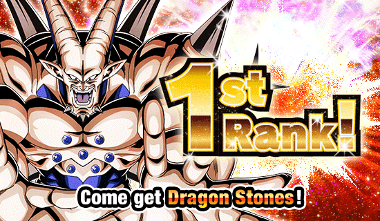
Eu juro que Macau tem alguma relação secreta com GT bosses.
É serio, é muito bizarro, tipo, ano passado fez sentido o super 17, ele era a última coisa antes do aniversário, mas o omega?? Depois dele tem os androids 💀
Jamais vou recusar as 7 ds, mas que é estranho, é.
Medo doq Macau irá fazer quando lançar um baby dokkan fest (assustador)

Continuo sentindo todo o hype de 2024, está insano 🔥
Pelo menos, está tudo bem, pq a junção do global e jp foi confirmada pra perto da celebração de downloads, então a gente só tem que enfrentar mais 4 meses de coisas inúteis!!! Wow!!!!1!1!1!11!1
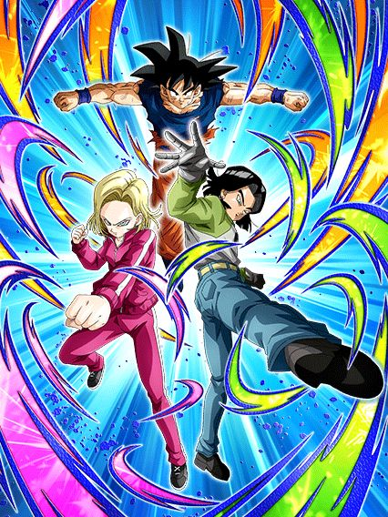
G O K U B A S E .
Esse card é bizarro, ele tem de tudo pra ser bom mas ao mesmo tempo é todo ferrado
Pra começar, eles obrigatoriamente precisam de um goku no turno pra terem os buffs mais importantes, só que eles são androids né, eles vão ter links de androids, o goku NÃO pô
E infelizmente pra eles, eles ganham muito mais DEF e 35% de redução de dano só depois de darem super, e lembrando que esse card saiu logo depois da celebração de download no jp, então eles já tavam ligados no quão tóxicos são AOEs no começo da partida e deixaram esse card assim mesmo, muito frágil
O real grande diferencial é esse card ser lider e suporte pra nova categoria "Tournament Participants", que é não ironicamente muito forte com cards muito bons
E o suporte deles é muito bom sim, eles dão 35% de ATK e DEF pra categoria no turno, esses 35% ainda aumentam pra 52% de ATK e 53% de DEF se eles pegarem 7 orbs oq eu achei meio difícil as vezes mas ok né
E eles tem um efeito de super attack muito forte, onde cada super attack deles aumenta 35% de ATK e DEF de todo mundo por 2 turnos, então sim, eles tem o incrível suporte de múltiplos turnos, muito bom isso, e slk, com 2 supers eles dão 70% de suporte, isso é muito forte
Uma pena que esse super attack tão forte só pode ser usado SE TIVER UM GOKU BASE NO TURNO (Omatsu por favor pare de colocar o goku em todos os cards, não precisava disso)
E pra finalizar esse card confuso, eles tem a active skill mais ridícula em anos
Se liga nessa condição: "Pode ser ativada após o turno 5 caso esteja com menos de 78% de HP"
Você olha isso e pensa "slk complicado ein, deve ser um ataque forte"
Eles mudam orbs TEQ pra INT.
É só isso, eles só mudam orbs e acabou, não tem buffs a mais, crítico, adicional, sei lá
Nada.
Tirando a ost muito boa, essa é certamente uma das active skills que foi feita em 2023/2024.
Eu não sei se agradeço por não ter uma categoria universo 3 no jogo ou se questiono pq esses caras são líder pra power of wishes.
Enfim, eles precisam ou de um time power of wishes ou tournament participants pra terem uma passiva, já começa por aí né 🔥
Ai pra se contradizer eles só ganham 100% de ATK e DEF se tiver um aliado power of wishes, então é, você parece ter liberdade mas não tem não xd
Tipo sim, eles quebram 1 ataque do inimigo e são efetivos contra tudo se tiver um aliado tournament participants, mas vc realmente tem como comparar isso com um pedaço de passiva?
Em resumo, mais um card secundário horrível e inútil, obrigado dokkan
Sério, se o objetivo é encher o jogador de goku base, não é mais fácil fazer o card secundário desse banner um goku base?
Pq específicamente o super dessa 18 é tão bem feito?
Bom, essa 18 quer muito ficar no slot 1, já que a passiva inteira dela pede isso
No slot 1 ela tem 200% de DEF a mais e 36% de redução de dano, além de dar 30% de DEF pra todo mundo no turno, não ironicamente isso é decente
Esses buffs são cortados no meio depois do turno 5 mas olha, considerando o tamanho de eventos difíceis recentemente..
Pra completar ela ganha 150% de ATK e 30% de chance de critar se ela levar um golpe antes de atacar, então é, slot 1.
Bom, é, ela é um card F2P slot 1, oq poderia dar errado?
Mas não diria que ela é inútil não, principalmente por ela ser uma rara 18 que não precisa de um 17 pra ter 90% da passiva, dá pra levar ela em algum evento sim
Ele certamente é metade de alguém que não poderia ser derrotado se ele fosse o super 17...
Esse cara é decente por 3 turnos e depois ele é um card, já que nesses 3 turnos ele tem 67% de chance de desvio (só arredonda pra 70% pô)
Depois dos 3 turnos a chance cai pra 50% oq não é exatamente horrível mas olha só, se 70% já é perigoso hoje em dia, imagine menos.. pelo menos ele tem 100% de DEF a mais se estiver no slot 2 ou 3 então é.. bem recomendado
Bom ele builda um pouco de ATK e DEF desviando e no turno 4 adiante ele tem mais 100% de ATK e um incrível adicional de 30% de chance de ser super, caraca, que personagem fantástico
Como eu disse, 3 turnos e depois inútil
Eu ainda tô achando hilário que o awaken e eza desse cara e da 18 vieram na mesma celebração e de algum jeito ela ganhou uma animação linda no super e esse cara tem uma animação de 2016 💀
")
Dokkan criou um vício em fazer o Kuririn do clássico muito forte.
Os buffs pra DB Saga não param, e eu simplesmente amo o fato do time ser muito F2P, coisa boa
Esse cara não tem nem EZA ainda mas ele é absurdo de forte, o cara tem muito ATK e DEF, debuffa o inimigo, é suporte de 30% de ATK e DEF pra DB Saga, tem uma chance infelizmente baixa de lançar um super adicional mas tá ali né
E acho q o mais doido é q ele ganha um scouter e 30% de chance de desviar por 3 turnos se seu HP cair abaixo de 86%, isso é muito forte considerando q DB saga tem deuses tipo a Bulma ou o Hacchan, esse cara é mais um personagem decente pra levar em eventos e ele consegue se segurar sozinho sim.
Esse cara vai eventualmente ser um LR, mas como o awaken dele pra LR pode acontecer aleatoriamente no mês que vem ou em 2036, é legal falar dele agora.
Ele tem uma base muito boa pra um LR, já que ele é restrito a DB Saga e Earth-Bred Fighters, q advinha só, é o time dele 🤯
Tem crítico, super adicional, todos com chances baixas mas q vão aumentar quando ele ganhar awaken
Ele tmb tem um pouquinho de suporte, então é, com a base ele tem, que ele seja incrível.
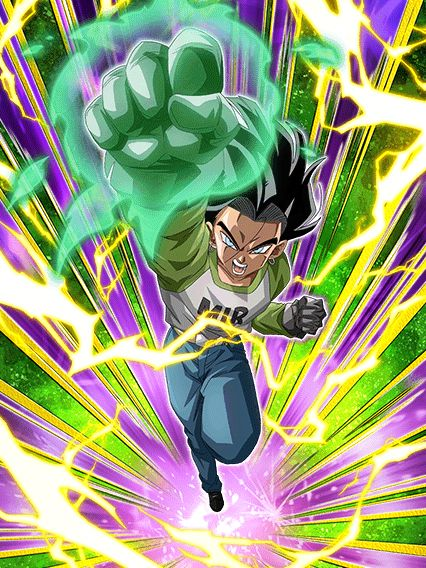 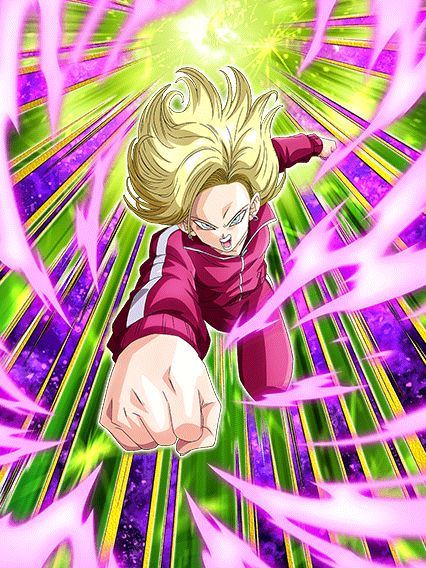
18 defensiva e 17 ofensivo, caramba, nunca vi isso antes ein dokkan.
Bom, os dois tem kits parecidos pq eles são irmãos né, uau
O 17 é um nuker ofensivo, ganhando 40% de ATK por orb e 30% de DEF e dá um adicional de 70% de ser super se o inimigo estiver stunado
Se tiver uma 18 na rotação ele dá suporte de 30% de ATK pra Sibling Bond e fica efetivo contra tudo, ou seja, pq vc não usaria eles juntos né
Enquanto isso a 18 é nuker tmb mas ganha mais DEF q ATK por orb, dá o mesmo suporte de 30% mas pra DEF, e diferente do 17 ela tem defesa ativa, q é bem mais valioso, aí ela já é usável com uma buildzinha de desvio
Ela fica efetiva contra tudo se o inimigo estiver selado mas isso realmente não interessa
O maior problema desses 2 é q eles não tem nenhum buff de começo de turno, é só oq eles pegarem de orb e acabou, isso é perigoso demais pra levar eles em eventos já q nenhum é orb changer, mas no geral, se eles ganharem um eza, podem ficar muito bons sim
E a arte deles é muito linda, slk, precisam de um sticker logo

Certamente o inimigo que o irmão do raditz e o rival do irmão do raditz tiveram que enfrentar.
Ah não sei pq tanto reclamam desse card, ele é tão bom, chance de stunar todo mundo no começo do turno, efetivo contra 1 inimigo, redução de dano se estiver enfrentando 2 ou mais inimigos..
Tipo, ele até ganha bastante buffs e dá crítico garantido se estiver contra um inimigo Universe Survival Saga ou Tournament Participants, pra mim isso é muito bom! Eu realmente gosto desse card F2P!
Ah é, ele não é um F2P..
Esse é sem dúvidas o pior eza de 2023/2024, tipo, até o goku black int tem uso se o evento for longo o bastante pra ele stackar, esse cara é tão horrível q ele garantido vai fazer as partidas acabarem bem rápido, já q ele vai morrer pra você
Acho q a gente deu sorte q ele não é extreme ein, se não seria pior
")
MEU DEUS.
PERA AI PERA AI.. CALMA..
SÃO BUFFS... PRA KALE??????????
OOOOOOOOMAGAAAAAWWWD
Esse frost é super simples de passiva e não tem nada de super útil, mas os stats dele são bem altos então ele acaba dando muito dano de uma vez, é meio engraçado
Não, ele não revive o time Universe 6 mas hey é um começo de algo
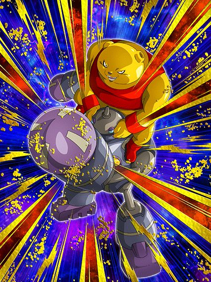
Um tank genuinamente bom.
É isso, eles são um tank pra Universe 6, eles realmente ajudam a Kale de forma honesta (perdão, é realmente surpreendente tá?)
Eles tem defesa ativa, buildam defesa, ganham um buffzinho tomando golpes, eles realmente são um tank
Lógico q eles só fazem isso mesmo, mas isso q eles fazem já é o bastante, obrigado omatsu.

Isso aqui é uma aberração.
Esse cara tem uma defesa ok, suportezinho legal pra Universe 6, aí do nada..
50% de chance de 400% de ATK
????????
O cara tem uma chance de ativar um pedaço da passiva??
Mas quem disse que para por aí? Depois eles ainda metem um 30% DE CHANCE DE 600% DE ATK RAAAAAAAAHHHHHH QUE PASSIVA É ESSA
Por sinal, o linkset desse personagem é abismal de HORRÍVEL, O CARA TEM OVER 9000 QM RAIOS TEM ESSE LINK-
Sem comentários.

Kkkkkkk hey guys se lembram quando o 17 e a 18 enfrentaram a R- a pera, UM LR DE PARTE 2 Q FAZ SENTIDO???
Parabéns a akatsuki e todos envolvidos, temos um LR da Ribrianne mas não do Kid Buu, obrigado 🔥🔥
Bom, ribrianne, muito hype realmente para o global
Pra começar elas tem muitas chances diferentes de mudar orbs oq é bem bizarro e eu garanto q deve ter um sortudo q viu todas as chances não ativarem xd
Elas tem 2 adicionais que podem ser supers, e ainda ganham bastante buffs com pelo menos 2 orbs pegos oq é muito bom, é coisa fácil né
Elas tmb ganham 22% de chance de crítico a cada 2 orbs pegos, oq é bem forte já q elas tem adicionais, redução de dano, crítico e orb change
Oq nos leva a situação óbvia delas: sem time
Independente doq vc pense, a categoria Universe Survival saga tem 2 times, Universe 7 e Universe 6 entre muitas aspas, qualquer outro é correr risco de vida
Tournament Participants? Vc tem o goku descalço, majunior e etc, pq vc usaria a Ribrianne? Não tem pq
Lógico, a Ribrianne não é uma top tier secreta que não tem time, ela é um LR muito decente mas que é facilmente substituível por algo melhor, e é isso
Por sinal, ela tem uma forma gigante com uma condição de power of wishes, outra categoria q vc jamais levaria a Ribrianne já q se os links dela com outros personagens do torneio do poder são ruins, imagina com cards tipo os GT Boys..
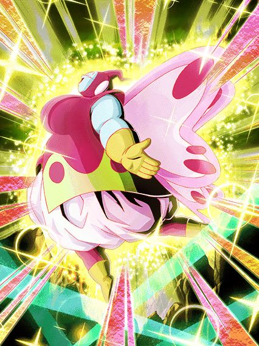
Isso aqui é a prova de que teria um goku black LR na celebração de downloads e tiraram ele de última hora.
Ela em si é uma boa giant form, 50% de chance de critar, dano legal, orb changer, fácil de pegar ki, bem tranquila
Mas a OST sinistra desse card é bizarra pq combina perfeitamente com a Ribrianne e ao mesmo tempo não, juro que seria perfeita num goku black rosé carnival com um domínio.. que bom que esse card totalmente existe e jamais foi ignorado pra colocarem o gohan do futuro ou algo assim..

Mais world tournament? Wooowww que divertido (não aguento mais isso não, socorro)
Tá.. vamo lá, o bardock é bem decente contra um inimigo Wicked Bloodline, tem 50% de chance de desvio, 2 adicionais e no geral buffs bem decentes, ele é usável no mínimo
O turles é um card de super battle road, e é isso, não consigo ver ele sendo usado pra qualquer outra coisa, ele tem uma build ali atacando mas vai demorar demais em eventos, melhor ficar no mais fácil mesmo
O buu já não tem esse problema de só ser bom em um evento, ele é horrível em qualquer um
O cara muda orbs pra rainbow depois de receber 5 ataques, que desgraça de passiva é essa??
O tenshinhan e chaos são super simples e infelizmente não tem nada de especial, eles só tem dano e defesa bons e uma chancezinha de crítico e adicional, não são incríveis em nada específico mas não são inúteis não, dá pra levar em uns evento ein.
Certamente um dos mestres do irmão do raditz.
Eu realmente não sei dizer se esse card foi feito seriamente, mas eu acho que não foi não
O mano tem stats horríveis, passiva horrível, o suporte pra earth bred-fighters é até decente mas é literalmente ignorado pq todo o resto do card é inútil
Lógicamente ele é mais um card meme, mas sério, parem com os cards meme constantes, é quase 1 a cada celebração, qual é, fica difícil zuar..

Eu juro q não sei como vão juntar as versões desse jeito.
Tipo, a proposta dessa celebração é boa, trazer de volta os LRs da celebração de download pra eles não levarem 1 ano pra voltar, mas pô, algumas pessoas tavam teorizando que aqui poderiam colocar o LR do tanabata adiantado no global pra facilitar na junção das versões mas não, é uma celebração filler estranha, bizarro.

Parece q alguém não gostou do goku black einKKKKKKKK
20 de fevereiro de 2024, 1 dia depois de revelarem o kit e animações do goku black, do nada o dokkan global muda de foto e de nome
Isso foi levemente hilário pelo timing em q aconteceu, logo depois de eles revelarem um card que aparentava ser bem decepcionante
Acho que a melhor parte foi que antes de recuperarem o acesso, a conta ainda fez questão de apagar os posts que tinham feito sobre o goku black, oq deixa tudo ainda mais perfeito

Isso foi lendário, obrigado a qualquer um q fez isso, omatsu provavelmente estava em shock (ou não pq odeiam o global)
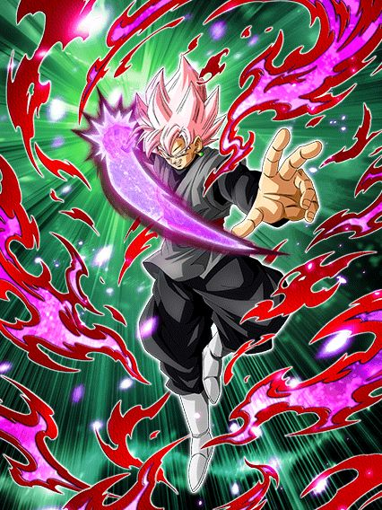
Se a gente não soubesse que eventos vem no aniversário, ele seria muito bom.
Esse goku black é um card extremamente problemático
Pra começar ele lidera Super Bosses, oq é legal já q ele traz a categoria adiantada pro global, e tmb Corroded Body and Mind.. e só
O dokkan fest de 2024 não tem uma 170% pra 3 categorias, beleza então né
Continuando ele tem animações bem zuadas, parece muito que ele era um card de 2021 q ficou guardado lá e decidiram usar agora, tem frames bonitos sim, não tá no nível da kale ou blue boys agl, o fato é q pros padrões do dokkan, principalmente depois do aniversário no jp, era de se esperar muito mais
Bom, falando do card em si, ele precisa de um time super bosses pra ter redução de dano (omega shenron 2: a vingança), pq ele tem 30% de redução mas isso é só antes de atacar (por favor não jogue esse cara no slot 1 achando q ele vai tankar)
E aí tem a grande mecânica dele: lançar ataques adicionais básicos.
É o seguinte: a cada rainbow orb q vc pegar vc lança 1 adicional básico, e não, não é exagero, realmente não tem como esse adicional ser um super, oq é ridículo
Apesar disso, ele tem um adicional garantido com chance de ser super oq é ok, e lança um super adicional garantido se atacar 5 vezes, então no geral vc vê isso acontecer se pegar pelo menos 3 rainbow orbs.. só tem um probleminha.. O GOKU BLACK NÃO É ORB CHANGER
E assim, vc realmente quer pegar esses adicionais básicos, pq a cada ataque q ele fizer, ele ganha 30% de ATK e DEF no turno, independente de ser super ou não, então se vc atacar muito vai acumular um dano e defesa bons, mas fica nisso, vc tá travado pelo rng dos orbs, vai realmente levar tudo na sorte?
Bom uh, esse cara tem um domínio então, expansão de domínio? 😳
")
Belo domínio amigo, agora tente escolher se usa esse domínio ou o do broly 💀
Antes de reclamar mais, eu AMO essa arte, slk
Bom, o goku black só fica por 4 turnos nessa forma então eh, ele fica "melhor" entre algumas aspas
Além do aumento em alguns números na passiva dele, AGORA ele vira orb changer então ele cria seus próprios orbs né, além de ser efetivo contra tudo e manter as mecânicas q ele já tinha
Por algum motivo a redução de dano inteira q ele tinha antes é toda antes de atacar agora, boa sorte tankando supers
Ah, e se vc está preocupado com os adicionais básicos dele, não se preocupe! Pois agora o goku Black lança adicionais com 10% DE CHANCE DE SEREM SUPERS, WOW DOKKAN, OBRIGADO POR DEIXAR ESSE CARD COMPLETAMENTE QUEBRADO NOS INCRÍVEIS 4 TURNOS Q ELE EXISTE
Eu realmente detesto isso, não tem necessidade de chances tão horríveis, principalmente pq isso é temporário e ainda sim, vc nunca vai usar o domínio desse cara
Sim sim, nesse momento o broly ainda não existe no global, mas não faz diferença, pq tmb tem o zamasu fusão
Me responde, vc prefere dar 20% de ATK e DEF pra super bosses, ou ser COMPLETAMENTE INVENCÍVEL por 5 turnos? Qual domínio vc acha mais útil num evento difícil ein?
Esse lançamento foi triste pq o goku black consegue sim competir no omega e etc, mas nos eventos q vem por aí no aniversário, impossível pra ele
E pra piorar ele não tem um card secundário pra ajudar, triste.

Ah, foi mal a demora, ela tá no milésimo super adicional..
Caros amigos, que eza insano.
A kefla simplesmente tem o maior dano do mundo, com um total de zero restrições
Pra começar ela tem 300% de DEF, que com os stats de eza ficam muito absurdos já, e como se não bastasse, ela ainda ganha 50% de chance de desviar se pegar simples 3 orbs, e num time Universe 6 que praticamente ninguém precisa de ki, ela fica super tranquila
Ela tmb tem muito ATK no kit mesmo e ainda stacka 50% de ATK no super, e tipo, kkkkk o valor é muito alto, ela tá no turno 1 mandando 10 milhões de dano sendo q ela stacka e transforma
Pra deixar o kit perfeito ela ainda lança um super adicional garantido se vc pegar 6 orbs, q aí já é mais complicadinho mas de novo, o time não precisa muito de orbs então não é muito impossível
Enfim, tudo q eu falei até agora foi a kefla na forma base, ela só fica assim por 1 turno e automaticamente se transforma no próximo

Todas as porcentagens dela aumentam MAIS, e os orbs necessários pra umas coisas diminuíram, agora são só 2 orbs pra ter o desvio e a defesa a mais
Ela tmb ganha um buff extra de 50% de DEF se pegar 4 orbs então é, desvio e bastante defesa é muito bom, tem como n
O adicional garantido ainda é com 6 orbs, mas pô, os valores dela aumentaram e ela continua stackando, tem nem doq reclamar slk
Ela também só fica nessa forma por 1 turno e vai pro ssj 2 no turno seguinte, ou seja, no melhor dos casos vc vê ela no turno 5 ou 6 oq ehhhh ok, já que ela não é muito fraca na forma base como outros cards por aí

O hack de dano infinito.
Os buffs de orbs que ela tinha antes agora são permanentes, ou seja, a chance de desvio, defesa a mais e tudo, agr não tem restrição de orb, e ao invés disso ela agora ganha coisas a mais com orbs, e slk, isso é absurdo
Com 2 orbs pegos ela tem 160% de ATK e 60% de DEF a mais, isso já é muita coisa pq ela JÁ TEM muito ATK e DEF
Agora ela lança um super adicional garantido com 4 orbs pq sim, ela pode né
E com 6 orbs ela vira o melhor EZA de dokkan fest, simples assim
Com os 6 orbs ela lança mais um super adicional garantido e aumenta a chance de desvio de 50% pra 70%, E ELA CONTINUA STACKANDO
Em resumo a kefla dá um dano absurdamente alto, tem uma defesa muito boa, 70% de chance de desvio e o dano q já é absurdo vai aumentando cada vez mais
Agora me diz, é tão difícil colocar adicionais assim em outros cards? A kefla lança 3 supers garantidos enquanto tem cards com chances horríveis (sim tô falando do goku black novo), vai entender qual a ideia dos cara
Vale lembrar que a kefla tem a active onde ela muda orbs PHY pra STR pra ajudar ela mesma e fica super efetiva, mas a condição continua ruim então ehhhh
No geral, card insano, EZA em níveis absurdos, e global first ainda slk, brabo
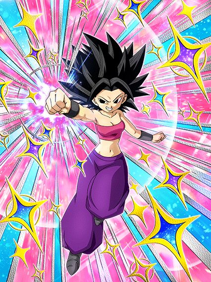
A garota do desvio se tornou o próprio desvio.
Sabe, existem alguns cards no dokkan que seguem uma regra simples: "Independente do que fizerem no EZA do card, ele irá sair quebrado do mesmo jeito"
Cards nessa regra são o Gohan TEQ por exemplo, e a Caulifla também se encaixa nessa regra.
Pô, a Caulifla TEQ sempre foi o card engraçado que desvia garantido contra Pure Saiyans ou Universe Survival Saga, e só isso dava muito valor pra ela, mesmo que o dano dela fosse podre e a defesa horrível, daí oq eles fazem com o EZA? Dão pra ela exatamente oq ela precisava
Para os desconhecidos, o buff da Caulifla de ganhar 8% de chance de desvio por aliado Universe 6 ou Peppy Gals é um buff q conta uma categoria por vez e não as duas juntas, ou seja, se um aliado é U6 e também Peppy Gals, ela ganha 16%
Lembrando, ela mesma também conta pra esse buff
O fato é que agora ela ganha 8% de ATK e DEF com isso tmb, ou seja, num time completo Universe 6 e Peppy Gals ela tem 112% de chance de desviar oq é hilário, e tmb 112% de ATK e DEF, oq já é um buff muito bom
Ela tmb ganhou uma habilidade diferenciada de dar 16% de ATK por 2 turnos pra geral depois de desviar 6 vezes, e olha, com desvio garantido fica fácil né
Pra finalizar ela ganha mais 160% de ATK e lança um super adicional garantido se tiver uma Kale no turno, e a Caulifla stacka né, devagar, mas stacka
E é com isso amigos, que eu posso confirmar que sim, a Kale dokkan fest tem oficialmente um time, ela é usável agora e tem todo seu potencial a mostra
Para os fãs da Kale que sobreviveram no deserto sozinhos sem time por praticamente 1 ano inteiro, parabéns

Tenho orgulho de vocês.

Pelo menos não é obrigatório levar a Caulifla no time.
Bom a Kale é mais focada em ter stats altos e stackar mais rápido doq desviar
Os buffs dela funcionam do mesmo jeito q a Caulifla TEQ mas com Pure Saiyans e Peppy Gals, oq deixa a condição levemente pior pra ter o buff máximo mas tudo bem
Ela ainda tem o super adicional garantido contra um inimigo Pure Saiyans ou USS mas agora tem outro super adicional garantido se o time inteiro for Universe 6 (é o time dela, quem iria adivinhar né)
E ela tem mais dano e ganha defesa ativa se tiver uma Caulifla no turno, é basicamente isso
O legal da Kale é q ela stacka e dá pra stackar bem rápido e tals então dependendo de como a luta seguir, talvez a defesa ativa nem seja obrigatória a ter, já q a build óbvia pra ela é desvio, então é, stackando defesa, desviando e tendo defesa ativa, fica difícil de matar ela, belo EZA.

Desvia ou morre?
A Vados é uma suporte pra Realm of Gods, Siblings Bond, Bond of Master and Disciple e Universe 6, mas uma parte da passiva dela só ativa com U6 e RoG então não faz sentido mas blz
Ela até tem uns valores de ATK e DEF interessantes, tem uma cura de 40% de HP se vc cair abaixo de 60%, e tem orb change pra rainbow se uma das 2 categorias q mencionei antes tiver no turno
Mas é, o grande elemento é só a 70% de chance de desviar mesmo
Tipo, eu não sei se a Vados morreria instantaneamente pós super de uns ataques básicos, mas por precaução, reze pelo desvio sempre né

Eu acho ele legal mas não dá pra negar q ele é meio ehhh..
Esse Hit é um card totalmente ofensivo com um monte de ATK e DEF, wow, impressionante mesmo
Ele tem 50% de chance de critar e tem várias chances de stunar o inimigo pq todo Hit faz isso né
E as mecânicas mais legais q ele tem são ter 50% de chance de desviar mas só depois de atacar, oq significa que ele é uma vítima da pessoa chamada Zamasu red zone, e ele quebra 1 ação do inimigo toda vez q atacar 2 vezes, e não, não precisa ser super
No geral é isso, o Hit é um card q dá dano, tem uma defesa decente e o desvio, mas AOEs irão matar ele instantaneamente
Pelo menos com essa celebração, o time Universe 6 ganhou bastante buffs, então dá pra escolher se leva esse cara ou não pra uma luta
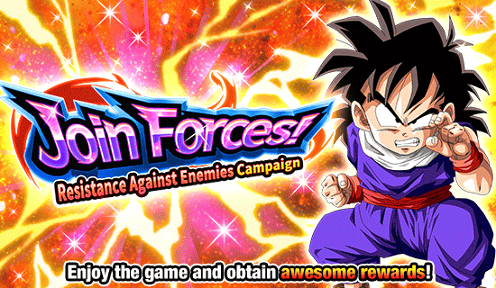
Celebração filler 3: a vingança da vingança
Eis aí uma celebração de todos os tempos, acho que o legal é que essa celebração ENFIM trouxe a atualização do nível de poder que facilita sua vida dependendo do seu nível de poder (pessoalmente eu amei essa atualização)
Mas eh, tirando a atualização, é só uma celebração qualquer que vem antes do dia dos saiyajins, por sinal.. sem ideias doq vai ser.
")
Gohan do futuro int ao contrário 💀
Eis aí um dokkan fest brabo, praticamente um líder 200% pra quase todo card Bond of Master and Disciple, muito suporte, dano e defesa decentes.. só que é segurado por uma falha q é fatal muitas vezes
Bom, esses caras são um card de slot 2 ou 3, já que eles ganham bastante da defesa depois de darem super, e uma grande coisa é eles darem Ki e 30% de ATK e DEF incondicional pra Bond of Master and Disciple ou Saiyan Saga 💀
Mas eles tmb tem uma habilidade bem forte, onde estando no slot 3, além do suporte já mencionado eles ainda dão outros 30% de ATK e DEF pra qualquer super class, e esse suporte é assustador pq ele dura 3 turnos, é bem forte já q são pouquíssimos os cards q fazem isso (o único q eu vou lembrar agora é Yajirobe TEQ)
Bom, falei do dano, defesa, suporte.. e a falha?
O gohan e piccolo tem uma mecânica oposta a do gohan do futuro int, onde ele ganha 58% de redução de dano se o HP cair abaixo de 70%, isso acontece no meio do turno mesmo, então se vc leva um super de 300k de dano, isso provavelmente vai ativar e o gohan fica super tranquilo
O gohan e o piccolo tem o oposto, eles tem 40% de redução de dano no slot 1 ou 2, e se eles caírem abaixo de 70% de HP, eles PERDEM a redução de dano 💀💀💀
Sim, eles tem um revive, mas o revive precisa q vc já esteja abaixo de 70% de HP no começo do turno, então algo q pode muito acontecer é um super turno 1 slot 1 te deixar abaixo de 70%, transformando o gohan e piccolo em um macarrão espaguete número 10 cru
Bom, caso essa leve trollagem não aconteça com vc, você pode reviver felizmente
")
Ele destrói tudo no primeiro turno.. e continua destruindo nos turnos seguintes.
Ok ok, antes de falar de qualquer coisa, eu TENHO que falar da animação de revive q é a coisa mais linda, os cara pegaram referência do mangá e tudo slk muito bom
E uma coisa muito braba foi o estilo de OST que escolheram, já que mesmo que o Gohan esteja 100% ódio rages grrr, o Piccolo acabou de morrer, então decidiram que deveria ter uma OST triste, sem guitarras, isso é muito raro
Bom, agora o Gohan vira uma máquina de dano que não ironicamente é invencível no primerio turno, já que caso tenha um Goku (não só base, graças a Deus) no time, ele tem desvio garantido no primeiro turno depois de reviver, isso enquanto ele ganha 750% de ATK crítico garantido, éKKKKKKKK pouco dano slk
Sim, o Gohan é uma bomba nuclear nesse primeiro turno mas ele não fica muito fraco não, depois disso ele ainda tem 50% de chance de desvio, ainda tem 400% de ATK e fica efetivo contra tudo, acho isso bem brabo
Bom, vale mencionar que esse card é genial pra usar com o Goku descalço, já que o revive deles só tem uma restrição de vida e obviamente o Goku ativa a passiva do Gohan, enquanto o Gohan torna o Goku um deus também
Uma real pena que o banner deles é muito, MUITO podre (sim o raditz está no banner)

Eu gosto deles.
Acho q o maior problema deles é o fato do card não ter um papel no time, já que eles não dão suporte nem nada, mas querem q vc coloque eles no slot 3
Esses manos são um tank bem decente, buildam 120% de ATK e DEF com 4 ataques feitos (eu quando um card secundário builda mais fácil que o fraudehan KKKKKKK), tem um adicional garantido com 70% de chance de ser um super, e tem defesa ativa se tiver um Terrifying Conquerors ou Pure Saiyans no time, q é estupidamente fácil de ter
E o extra deles é terem 30% de redução de dano no slot 3, que com a defesa ativa, faz deles um tank decente, mas pra que?
Nada mais na passiva deles muda se eles tiverem no slot 3, se é pra eles serem um tank, pq não ter a redução no slot 1?
Pelo menos a animação de super deles é muito braba..

Ah sim, o card de world tournament.
Eu gosto desse card, mas só por achar eles legais mesmo, já que enquanto estiverem nessa forma, o nappa tem um super attack em área e isso é obviamente bom pra world tournament
Mas em uma boss fight normal.. bom uh, ele tem um dano legal e uma defesa decente, mas aí as últimas linhas da passiva desse card fazem eu querer matar alguém
O mano tem incríveis 78% de ATK e DEF por inimigo existente.
Sabe, fica difícil levar a sério isso, se fosse só ATK eu até não ia ligar muito, mas pô, o cara consegue ter 546% de DEF a mais KKKKKKKKKK pena que é impossível fora do world tournament, mas vale a risada pelo menos
E aí ele tem uma mecânica que não tem nenhuma graça, ganhar 1 de ki por golpe final feito
Eu acho que já falei o bastante sobre oq eu acho dessa desgraça de mecânica de golpe final em outros cards né? Beleza ent
Bom, o nappa tem uma active skill bem desbalanceadinha que corta seu ATK em 50% mas ele ganha desvio garantido por 1 turno, isso pode ser usado a qualquer hora a partir do turno 3.. por mim tá bom
E pra finalizar, o vegeta mata o nappa se seu HP cair abaixo de 50% a partir do turno 4, e aí sim eu diria q o card é usável
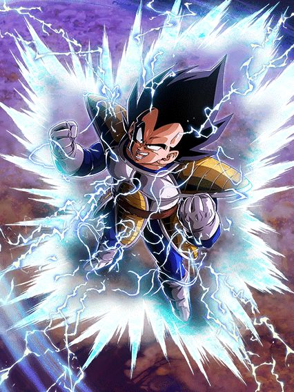
Pergunta: Quantos cards extreme class tem um pedaço da passiva q só ativa contra inimigo super class? (eu sei, não dá pra responder)
Bom o vegeta é muito forte por 3 turnos, já q nesses 3 turnos ele tem defesa ativa, dá até pra jogar ele no slot 1 se quiser..
Esse cara ganha 3 de Ki e 180% de ATK e DEF se estiver contra só 1 inimigo, e ganha esse mesmo buff uma segunda vez se estiver contra um inimigo super class, então é, dano e defesa ele tem de monte
Já deu pra notar que Ki também não é problema pra esse cara, e isso é bom pq ele dá crítico garantido se estiver com 24 de Ki
No geral um card muito forte, especialmente contra as blue zones q virão no aniversário.. o problema é passar pelo nappa primeiro né..
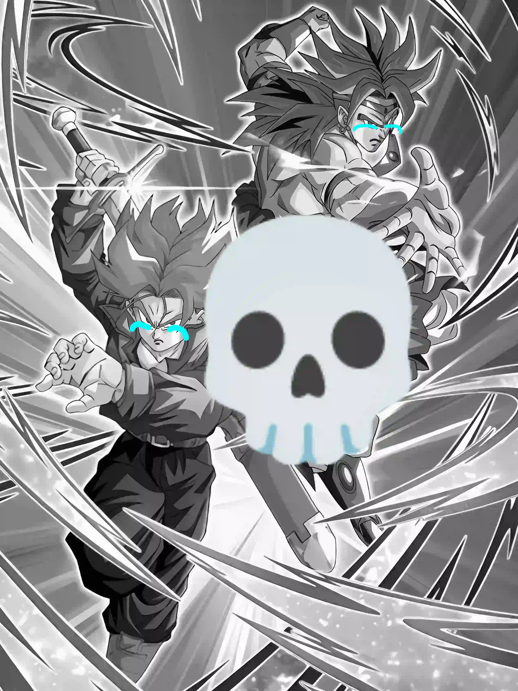
Com licença, mas.. global????
Isso aqui é realmente importante de mencionar pq é a coisa mais ridícula possível
Quando o trunks e broly LR lançaram no JP, eles vieram com um bug estranho que zuava o dokkan awakening deles, esse bug impedia eles de virarem LR e travavam eles num estado bizarro, como se fossem um "meio LR" e só deixava essa estrela de bronze do lado da estrela do hidden potential

Em cerca de uma semaninha, tava tudo resolvido, foi feita uma manutenção e as gemas verdes usadas pra comprar as medalhas foram reembolsadas e o awakening foi consertado, maravilha
O grande problema é que isso aconteceu no JP meses atrás e agora que o trunks e broly vieram pro global, eles vieram bugados, sendo que não faz nenhum sentido
O código era pra estar corrigido né, então pq não tá??
Enfim, acho q esse bug valeu mencionar aq pq ele afetou pessoas de forma aleatória, tanto que alguns conseguiram fazer o awakening sem problemas e outros não (eu inclusive não consegui)
Realmente estamos nos aproximando da junção das versões, até os bugs são os mesmos 🔥🔥
 & Super Saiyan Broly")
O melhor F2P do jogo.
RAAAAHHHHH EU AMO ESSE CARD 🦅🦅🦅
Realmente insano quando o dokkan disse "Está na hora de um original do Dragon Ball Z Dokkan Battle" e realmente mandou um original brabo (sucumba, miles morales da insomniac)
Um fato legal desse card é que no lançamento dele, pelo menos uns 80% dos jogadores de dokkan perguntaram oq tava rolando no Modo Quest pra esses caras estarem lá (eu incluído)
Bom, esses caras tem habilidades muito boas e no momento não tem um eza, oq significa q eles podem sim vir a competir com bosses futuramente
Eles tem 50% de chance de crítico incondicional, lançam 2 adicionais com 30% de serem supers incondicionais também, ganham mais dano e mais Ki por orb rainbow pego, e tem uma parada q eu não sou muito fã, mas é ganhar 31% de ATK e DEF e 8% de redução de dano por super attack feito, o que é bem forte se eles derem 3 ou 4 supers né
Acho que o mais estranho desse card é eles terem uma mecânica de mudar orbs pra rainbow, mas só se eles estiverem no slot 1 ou 3 quando o turno começar
Meio estranho, mas ok né
E não é o bastante, eles também tem uma active skill q é uma cutscene do quest reutilizada mas muito boa, e a ost é maravilhosa também
Eles ganham 20 de Ki gratuitamente e 60% de ATK por 1 turno com uma condição decente, achei bom.

Enfim, esse card é muito maneiro, espero ver mais cards assim, bons e originais, já que o lado F2P do jogo também importa
")
Ele é muito bom!! por um turno..
Metade da passiva desse gohan só ativa quando tem um goku no time e mais um pedaço ativa se ele estiver no turno, então já dá pra ver q ele não é dos melhores..
Acho q uma coisa legal desse gohan é ele ter 50% de chance de critar toda vez q fizer um ultra super attack, mas é só isso mesmo
O grande valor desse gohan aparece quando vc cai abaixo de 58% de HP, já que aí ele ganha mais buffs, dá crítico garantido e ganha 58% de redução de dano
Infelizmente essa redução só ativa 1 vez na partida toda o que é bem triste mas eh, ele tem 1 turno sendo deus, é alguma coisa
Enfim, mais um prime battle infelizmente medíocre.

Use um time Wicked Bloodline ou vc não tem card, é isso.
Eu vou ser bem direto e já falar que esse card é dano puro e suporte
Sim, o suporte é muito bom, mas qual é cara.. difícil tankar
Esses manos tem um ultra super attack similar aos androids int, que dá 35% de ATK por 2 turnos pra extreme class, isso juntamente com eles darem 30% de ATK e 50% de DEF pra Wicked Bloodline
E eles tem uhh.. basicamente só isso, o resto é só dano bruto e um super adicional garantido contra Super Saiyans que é quase impossível acontecer
Ficou bem óbvio que esse card é restrito a 1 time, que já não é tão forte, e ainda sim ele não é o bastante pra ajudar, já que dano e suporte a gente já tem de monte, olha os coolers né..

RAAAAHHHH EU AMO O DIA DOS SAIYAJINS
GRANDE celebração, escolha maravilhosa de card, bastante coisa pra fazer, o primeiro SUPER EZA na história do jogo, só coisa boa
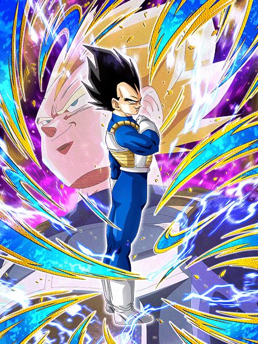
Gohan TEQ respawnou em outro card.
MEUS AMIGOS, que card incrível, ele é super parecido com o goku god do ano passado, mas melhor em certos aspectos (mas meu goat continua sendo ele)
Esse cara tem um buff de intro (apesar de não ter uma animação de entrada) que dura 3 turnos, onde ele lança um super adicional garantido e tem 18% de redução de dano
Sim, a redução é estupidamente baixa, mas não faz muita diferença ter ou não ter ela, o vegeta é um tank de qualquer jeito
Do mesmo jeito q o goku god, esse cara stacka ATK e DEF no super attack, então ele já tar lançando 2 garantidos no começo da luta vai ajudar bastante
E não acaba, já que ele ainda lança um adicional com 70% de chance de ser super caso tenha um goku no turno (não, não precisa ser um goku base, obrigado)
Bom, esse cara tem um requerimento levemente específico, que é estar com a vida cheia, já que ele ganha ATK e DEF multiplicativos dependendo de quanto HP vc tem, e acredite, é muito absurdo
O vegeta ganha a defesa assim que vc terminar de pegar os orbs no turno, então se vc olha a defesa dele antes do turno começar, vai parecer baixo, mas é um valor muito mais alto que parece
E aí tem a parte braba: esse cara tem defesa ativa infinita, sem condição nenhuma, do mesmo jeito q o gohan teq, o que torna os dois muito parecidos, já que vc pode fica stackando infinitamente com o vegeta se quiser, mas eu não recomendo, ele não precisa de tantos stacks assim
Minha recomendação é stackar nos turnos que ele tem o adicional garantido e transformar ele
Por sinal, meu Deus kkkkkk ele tem a condição mais fácil de todas pra transformar: estar acima de 18% de HP a partir do turno 3, praticamente impossível né

É bom que o inimigo comece a rezar.
O que você poderia considerar um "problema" do vegeta antes da transformação, q seria não dar muito dano (isso na verdade é ótimo pq ele stacka tranquilo), agora não é mais um problema.
O vegeta mantém a defesa ativa permanente, a redução de dano fica permanente também, e o buff de defesa que não dá pra ver aumentou também
E agora o vegeta vira uma máquina de dano, já que ele tem um adicional com 70% de ser super caso seu HP esteja acima de 30%, e juntamente com isso ainda lança um super adicional e quebra 1 ação do inimigo se ele levar um golpe antes de atacar
Sim, ele não stacka mais, mas ele ganha 50% de ATK e DEF por super feito, e como lançar 3 num turno é muito comum, esse cara tem uma defesa insana q a gente não consegue ver
E não basta só os múltiplos supers adicionais, além disso o vegeta tem uma mecânica de aumentar o próprio ATK dependendo de quanto HP o boss ainda tem
Esse buff se totaliza em 110% de ATK se o inimigo tiver 40% ou menos de HP, então é, com tantos supers e cada vez mais dano, fica fácil né?
Tem mais.
O vegeta tem uma active muito forte que torna todos os ataques dele críticos e ainda por cima dá um dano do caramba por causa dos stacks, além da condição fácil
Em resumo, o vegeta é um sucessor maravilhoso do goku god phy, o vegeta tem tudo q ele tinha de melhor e ainda tem mecânicas ainda mais fortes, tornando ele facilmente o melhor TUR do jogo
E por sinal, EU AMO as osts desse cara, é isso.
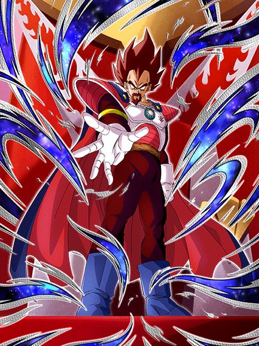
Eu julguei esse cara como mid e estava errado, mil perdões.
Esse cara é disparado o melhor suporte pra qualquer card Vegeta's Family, e pra isso vc só precisa de uma coisa: pegar 3 orbs.
O rei vegeta é um suporte orb changer, e eu admito que o orb change dele é horrível, já q ele só troca orbs PHY pra AGL e isso é horrível, mas tudo bem pq normalmente não precisam de tanto ki no time
Com 3 orbs pegos, ele ganha 18% de redução de dano, e caso sejam 3 orbs AGL, a redução aumenta pra 36%, o que é minimamente decente
O suporte dele é o básico: 30% de ATK e DEF e ele ainda dá 18% de chance de crítico pra personagem Vegeta's Family, que é muito bom pro vegeta teq
E aí é o seguinte, esse cara ganha alguns buffs a mais se tiver um vegeta no turno, e um desses buffs é aumentar o suporte dele de 30% pra 60%, o que é brabo, mas infelizmente o suporte só ativa DEPOIS de ele dar super.. pq?
Esse cara consegue tankar sim os supers brabos, ele tem uma defesa muito alta, mas pq vc jogaria ele no slot 1 ao invés do vegeta transformado que ganha um super adicional garantido e tudo?
Acho q é a única falha dele, mas tá tudo certo pq ele continua sendo um belo card que faz seu trabalho muito bem, até as animações do cara são boas
")
Ele é bom em slots específicos..??
Esse foi um Eza interessante, não é um card ruim mas ele tem especificações muito estranhas, tipo, ele é restrito a Vegeta's Family, óbvio, mas isso é de boa e ele ganha buffs muito fortes, incluindo 50% de chance de desviar
O fato é que o trunks precisa ou de outro trunks ou da bulma no time pra ter um pouco mais de ATK e DEF pq..??
É, tem a bulma no card mas.. pra q?
E ele também tem uma restrição de slot esquisita onde:
No slot 1 ele tem 100% de DEF a mais e dá 3 de Ki pra todo mundo
No slot 2 ele tem 50% de ATK e DEF e agora os 3 de Ki são só pra Vegeta's Family
E no slot 3 ele tem 100% de ATK e os 3 de Ki agora são só pra ele
Sei lá, ficar quebrando a passiva e o suporte do card dependendo do slot q vc tiver é bem paia, mas é um bom card, tem belas animações
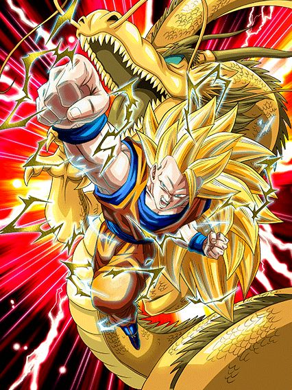
ESSE CARA
ESSE CARA TINHA 1 LINHA
1 LINHA DE PASSIVA
O goku é um deus nos primeiros 5 turnos dele, já que ele tem seus balanceados 500% DE ATK E DEF que não são nem um pouquinho absurdos né, acho até meio justo isso ir diminuindo
E se 500% de DEF não tankar, fique tranquilo, pq esse cara tem 60% de chance de desvio (antes de atacar 💀, infelizmente cai pra 30% depois) e quando desviar ganha mais 150% de DEF, oq obviamente é muito mais que o suficiente pra colocar esse cara em mais de 1 milhão de defesa com desvio, eu diria que é bem balancead-
Eu falei q esse cara dá crítico garantido no primeiro turno dele? Pois é, não tem como o boss evitar o super de 15 milhões crítico, boa sorte a ele
Por sinal ele ainda fica com 50% de chance de critar quando desviar, então não pense q vai ser só um turno nessa brincadeira..
Não só isso mas pra finalizar, ele tem aquele humilde 50% de chance de lançar um super adicional que podia ser melhor mas é melhor que nada, agradeço
Bom, o goku vai perdendo esses buffs e depois de 7 turnos ele tá zerado, vira um card desvia ou morre, então é, mais um card feito pra evento curto.. pelo menos ele cozinha demais né.
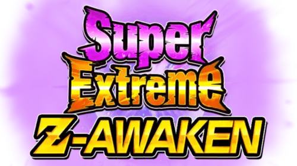
Quando anunciaram os Super EZAs, eu achei bem interessante pq seria uma oportunidade de trazer cards antigos de volta né? (nem preciso comentar de pessoas chamadas goku black int ou jiren)
Mas eu não achei que seria algo ASSIM, pq meu amigo, isso é absurdo
Chega até a ser engraçado, pq quando a gente ficou sabendo que SEZAs não iam mudar a leader skill ou o super attack, a gente ficou meio em dúvida, mas o goku ssj3 mostrou pq não mudaram
É a melhor oportunidade que eles tem de colocar personagens que nunca tiveram uma chance nem com eza no meta de novo, e ainda trazer alguns reis de volta
Acho que o hype com o Super EZA do Gogeta STR do primeiro aniversário seria muito absurdo, principalmente se ele for extremamente desbalanceado
Vamos torcer muito que personagens que eles zuaram com ezas no passado não sejam zuados novamente (estou confiando em você, goku black int daqui 7 anos)
Em geral, uma função muito bem implementada. só podia dar mais umas dragon stones né kkkj

Isso não é mais um meme ou uma brincadeirinha, é um pedido de socorro.
Por favor, p a r e m .
Eu vou resumir pra você: TODOS eles são mid, ok? Pode passar pra outro tópico..
Se você quer continuar vendo meu sofrimento, então é, continue lendo 💀
O gokuzinho e o gohan místico tem um monte de ATK e DEF, sem nenhuma mecânica defensiva e eles ainda tem a audácia de buildar um pouquinho mais, como se fosse fazer diferença né
O gokuzinho pelo menos pode virar oozaru com sua incrível 10% de chance de transformar
E se você acha que as chances de 10% acabaram, está enganado, pois o incrível cooler agl tem não só 1, mas DOIS ataques adicionais com 10% de chance de serem supers, realmente o mais forte do universo
Pelo menos o cooler tem alguma coisa, já que ele builda atacando sem te obrigar a fazer supers, e tem 50% de chance de desvio se estiver buildado, boa sorte pra fazer isso
O super trunks é um card completamente RNG, 75% da passiva dele tem chances de ativar, incluindo incriveis 70% de chance de ter 150% de ATK e DEF.. preciso nem falar nada né?
É sério, eu entendo, poxa são cards gratuitos, mas precisava mesmo fazer eles tão medíocres assim?
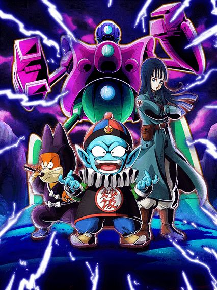
Realmente a salvação dos cards de world tournament é não ser um EZA, eu acho
Eu irei ser direto ao ponto, esse é um card que não tem restrições no kit mas as categorias infelizmente forçam eles a serem usados em DB Saga e nada mais, oq já é um probleminha né
Mas olha, eu acho esse card maneiro pq ele tem muito RGN envolvido, mas de um jeito mais divertido
Basicamente esses caras tem uma intro que dura 5 turnos, e nesses 5 turnos eles vão mudar orbs PHY pra AGL, STR ou TEQ aleatoriamente, e dependendo da orb q vc pegar, eles ganham buffs diferentes
Orbs STR fazem eles terem uma ofensiva melhor, ganhando 100% de ATK e 50% de chance de critar
Orbs TEQ fazem eles mais defensivos, dando 100% de DEF e 50% de chance de desvio
E orbs AGL são meio q um balanceamento dos 2, dando 70% de ATK e DEF e um adicional com 50% de chance de ser um super attack
Esse orb change acontece também se tiver um inimigo goku mas aí é específico demais né
Em geral um cardzinho bem divertido, não necessariamente forte mas também não é horrível, é mais uma prova q os F2Ps de DB Saga não costumam errar
E por sinal.. MELHOR OST DO JOGO RAAAAAAHHHHH 🦅🦅
Certamente o ápice da trilha sonora.

...pq botaram restrição no card que não tinha nenhuma?
Tipo, esse EZA é bom sim, mas ao mesmo tempo ele não é, sei lá
No global ele ainda tá tranquilo, nada realmente destrói ele, mas no jp a história é outra, esse cara tem 5 turnos de defesa ativa e como os eventos lá voltaram a ser mais longos, ele n vai tankar lá não
Pelo menos com essa defesa ativa ele consegue tankar ataques antes de dar super, ganhando o buff de dano dele mais fácil doq antigamente, além de ele buildar ATK e DEF com 2 supers, então nesses 5 turnos ele é bom sim
Mas só serem esses 5 turnos é o problema, o vegeta dá MUITO DANO, sim, crítico garantido, tudo brabo, supers de 15 milhões e etc, mas doq adianta tudo isso se ele não vai tankar os ataques básicos de 1 milhão de dano?
E aí que tá o outro problema, o vegeta ter um super adicional garantido, mais ATK e DEF, defesa ativa permanente e tudo mais.. contra um INIMIGO CELL
MALDITO SUPER TRUNKS, amaldiçoando outros cards com isso
Acho que isso resume bem o super vegeta, ele dá bastante dano mas depois que a defesa ativa acabar, ele vira farofa
Uma coisa é que esse cara no turno da active é hilário, 30 milhões de dano crítico garantido, isso se ele não der um adicional né kkkkk
E outra coisa que já ficou óbvia né: a Kefla STR foi uma anomalia e jamais vamos ver outro EZA assim.

(Será que já tem jjk suficiente no site?)

Se ele é bom só quando vc tá praticamente sem HP, ele é realmente bom?
Esse cara real só funciona se vc tiver pouca vida, se vc não estiver com tipo, 10% de HP, ele não tem passiva
O que esse cara tem é um suporte pra todo mundo de 25% de ATK e DEF que é muito bom, e o suporte ainda aumenta pra 50% se for pra um aliado AGL, STR ou PHY
Os stats desse cara são baixos, a defesa dele é ruim, o dano dele é bem mediano, mas ele por algum motivo vira um deus se vc estiver a beira da morte
Se vc estiver com menos de 30% de HP no turno, o vegeta dá crítico garantido e tem 90% de redução de dano
A gente sabe que redução de dano alta assim tanka qualquer coisa por causa do golden freeza AGL antigão, mas o fato é que o vegeta tem stats mais altos que ele então é, ele realmente fica invencível, e isso tudo é permanente, enquanto vc estiver abaixo de 30% de HP, esse cara é um tank suporte absurdo, o problema é que isso machuca o resto do time inteiro né
Eu não diria que ele é ruim, mas como tentar manter ele com a redução faz o time inteiro correr risco de morte pra qualquer coisa, é bem justo dizer que ele podia ser um pouco melhor né
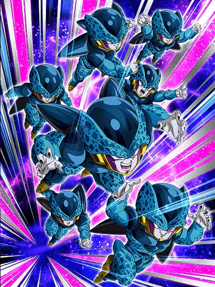
Eles vão ser úteis no futuro.
Esses caras precisam de um time completo Artificial Life Forms, que vai ser necessário pra uma missão do gohan beast lá no aniversário, então eles já tem um valor que talvez não se mostre agora, mas sim futuramente
Com o time completo, eles tem 360% de ATK e DEF e 70% de chance de desviar que é algo já muito aceitável, além de eles serem suportes de 30% de ATK e DEF pra categoria também
Eles também tem um adicional com 50% de chance de ser super sem nenhuma condição que é ótimo
Ponto, essa é a passiva deles, pq oq vem depois é complicado..
Super adicional garantido e orb change, mas só quando tiver um Cell perfeito ou super perfeito no time, preciso nem dizer que isso não existe né
Bom, tem o Cell INT LR mas ele segue com o problema de correr muitos riscos antes de ele se transformar, e infelizmente ele já não é mais o deus que era antes, triste
Mas esses caras são bons sem ele, e isso é ótimo.

Se vc tava afim de ver uma coisa inesperada, vc encontrou.
Alguém esqueceu a churrasqueira ligada e tirou esse card no ponto certo, mlk, eles cozinharam tudo
O 16 é um dos melhores tanks do jogo gratuitamente, ele basicamente não tem condições no kit
O cara tem defesa ativa permanente sem nenhuma condição, builda 48% de redução de dano simplesmente tendo ataques direcionados a ele (ou seja, não importa se ele levar um ataque ou desviar, conta pra build de qualquer jeito) e ainda por cima tem 50% de chance de critar depois de levar 1 simples golpe, tipo.. como assim???
Esse cara tá andando por aí com defesa ativa, quase 50% de redução de dano e stats bons de graça praticamente, tem gente usando ele sem leader skill oq é insano
Por sinal esse cara consegue tankar supers de milhões de dano estando em desvantagem de tipo ainda
Mas aí vem a melhor parte.. depois de anos, o 16 finalmente pode ser usado no mesmo time q o Gohan AGL sem ser um time zuado, graças ao goku descalço do torneio
Esse 16 tá em Powerful Comeback, e o gohan em Earth-Bred Fighters, os dois entram na leader skill e isso torna ambos mais fortes
Se tiver um gohan ssj ou ssj2 no turno, o 16 ganha mais ATK, mais DEF, e ainda vira um suporte de 58% de ATK e DEF pra todo mundo
E é bem óbvio que o 16 estar presente no time faz o gohan poder se transformar a praticamente qualquer hora, assim facilitando ainda mais a ver a transformação linda dele
É meio irônico esse 16 ser absurdo, pq no lançamento dele, ele não ajudava o gohan agl em nada e era inútil em geral, realmente é uma nova era do dokkan..

Pra alguns uma celebração interessante, e pra outros só mais dragon stone pra pegar
Essa foi a celebração de ano novo no jp, e no geral uma boa celebração mas com uma estranha demora no conteúdo.. as coisa demoram pra vir

Card feio, mas muito forte.
Esse cara tem infelizmente as top animações mais estranhas, principalmente na standby q comentarei mais tarde
Bom, ele é um card que desvia e dá bastante dano, e se resume a basicamente isso
Uma regra usando ele é sempre colocar ele no slot 2 ou 3, pq nesses slots ele tem 70% de chance de desvio e obviamente pode dar super antes de ser atacado, oq ajuda na defesa dele que eeeehhhhh não é perfeita
Essa regra é bem importante pq no slot 1 os 70% dele caem pra 50% e é horrivelmente perigoso, não faça isso.
Ele também tem 50% de chance de critar no slot 2 ou 3, além de dar crítico garantido e mais dano se seu HP tiver abaixo de 59%
E pra finalizar, ele tem 70% de chance de nulificar super attacks desarmados, que é quase inútil sempre, mas tá ali né
Acho que deu pra notar que o goku não é um card muito interessante, e realmente, é isso
Ele dá bastante dano e tem o desvio, não stacka, não faz nada de muito especial, só.
Bom, ele tem uma standby que tem condições decentes até, a partir do turno 3 se estiver abaixo de 70% de HP ou a partir do turno 6, bem tranquilo de pegar

Como deixaram ESSE card sem uma tela de K.O?
Eu gosto de me referir a essa standby como "Anti super instantâneo slot 1", já que esse é o exato propósito dela
O goku se torna um card desvia ou morre meio perigoso, já que ele não pode dar super attacks e a defesa q ele ganha na passiva é horrível
O bom é que ele tem 70% de chance de desviar e se estiver abaixo de 59% de HP isso aumenta pra 90% que é obviamente muito forte
Mas aí tá uma grande estratégia pro dragon fist:
Como essa standby é feita pra counterar supers, o goku ganha um scouter incondicional, e se vc quiser uma partida totalmente desbalanceada, cê pode usar a standby, ver aonde o boss vai dar super, e se for num lugar safe ou ele simplesmente não dar super, você pode fechar o jogo e abrir de novo
Isso vai resetar o turno, então o goku vai estar fora da standby e vc pode usar ela outra vez no turno seguinte, e ficar nisso eternamente sem se preocupar com supers aleatórios de surpresa
Mas, se for usar do jeito certo né.. o goku vai automaticamente counterar o super do boss garantido e dar um dano absurdo, além de ficar com desvio garantido pro resto do turno, que é bem forte se for um super instantâneo no começo
Ele ainda completa com OSTs lindas e dá um suporte de 59% de DEF pra todo mundo enquanto estiver na standby, que é bem útil
Em geral a grande mecânica desse goku é essa standby, o problema é que apesar de ele ser um card forte e ter mecânicas boas, ele sofre de animações feias (é inadmissível não ter uma tela de K.O pra finalização da standby), e também de outro problema..
O goku é facilmente substituível no time pelo futuro EZA do Vegetto STR, que tem scouter por 10 turnos e tals, no geral é um card melhor q esse goku, então eh, ele é bom sim, mas tem problemas consideráveis..
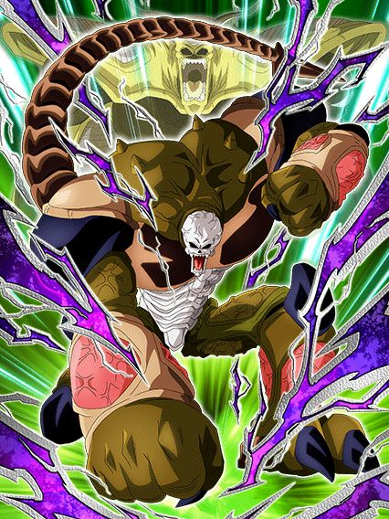
Pergunta matemática: Quantos stacks são necessários pra salvar a classe extreme?
Slk, tá aí o nosso raro buff extreme bem forte, mas que sofre assim como todos os outros: Times e parceiros de link em falta
Pra começar esse cara tem uma intro bem simples que dá pra ele stats extras e 50% de chance de critar por 5 turnos, bem decente
Bom, o hirudegarn é um card bem diferente, já que ele tem o potencial de não ser um card "Desvia ou morre", e sim um raro card "Desvia ou sobrevive", já que ele é um dos poucos personagens com desvio alto que stacka DEF, que obviamente ajuda se o desvio q ele tem falhar
Desvio esse sendo 70%, sem condição nenhuma e ele ainda lança um adicional com 70% de chance de ser super depois de desviar 1 vez, que é bem forte
Ele também builda um pouquinho de defesa a mais desviando, que é legal, mas meio simples
Já deu pra notar que o hirudegarn e o goku ssj3 tem bastante similaridades, já que as formas base deles são só fortes e acabou, pelo menos o hirudegarn tem formas de se proteger se não rolarem os desvíos
E sim, eu sei que ninguém vai stackar até ele ter 1 milhão de DEF e aí transformar, mas é melhor levar um ataque básico com 600k de DEF doq com 200k né?
Bom, a condição de transformação dele é a exata mesma que a standby do goku ssj3, abaixo de 70% de HP no turno 3 ou a qualquer hora a partir do turno 6, que convenientemente é quando a intro dele acaba, muito astutos os devs.
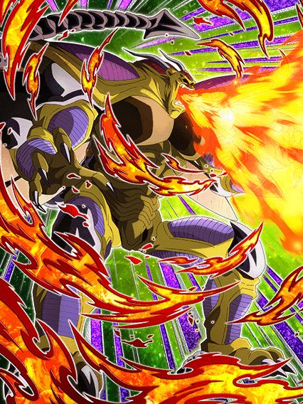
Agora jogue ele no slot 1.
É nesse momento que o mano hirudegarn mostra seu valor, já que ele começa com uma OST simplesmente LINDA de transformação
E dá pra fácilmente dizer que ele é o melhor card de desvio do jogo, é incomparável
Esse cara não stacka mais, só que agora ele mantém o desvio q ele tinha antes, e cada desvio no turno aumenta em 10% uma chance separada de desviar, ou seja, se vc desviar de 7 ataques, vc tem 2 chances diferentes de 70%, se não desviar nem assim é complicado ein amigo
E como se não fosse suficiente, toda vez que o hirudegarn desviar 3 vezes no turno, ele automáticamente vai desviar garantido de tudo no turno seguinte, e isso é MUITO forte, ele é praticamente o único card que pode fazer isso
Uma coisa importante é que no slot 1 ele ganha 100% de ATK e DEF a mais e 50% de chance de crítico, vale a pena tentar colocar ele no slot 1 pq né, mucho desvio
Isso pq eu ainda não falei q ele pode lançar 4 supers no turno, todos com esse crítico, e ainda desviando garantido, n tem como não mano
Os únicos problemas do hirudegarn são o desvio te zuar no começo da partida e obviamente o time dele que é inexistente, mais fácil usar ele no time do Zamasu LR..

Card bonito, arte linda, mas uhh...
Eu gosto muito desse card, ele é muito maneiro e essa roupa do goku precisa de mais atenção nos jogos, mas slk, esse card aqui precisava de mais..
Com o awakening e eza dele, agora ele tem uma intro bem simples, mas que é boa
E sobre o kit dele, ele é um bom suporte pra Bond of Parent and Child e cura bastante vida, já que ele cura na passiva, cura no super attack, e assim vai indo
A parte ruim desse cara é ele ter defesa ativa caso esteja abaixo de 60% de HP, o que normalmente seria bom, se Super Saiyans não fosse uma categoria que tá sempre com muita vida, já que o Vegeta do saiyan day precisa de bastante vida, o futuro EZA do Vegetto STR vai curar a vida inteira, e etc
Usar esse goku em Super Saiyans é meio perigoso, vai ser meio raro ele estar na condição pra ter a defesa ativa, e enquanto o bonde do pai e filho não ganhar outro líder, o time vai ficar parado
E caso o goku tenha a defesa ativa, ele é bem fortinho sim, já que ele ainda ganha 30% de redução de dano e aumenta o ATK um pouco se tiver outro Goku's Family no turno.. que bom que terá um personagem Goku's Family um pouquinho forte logo logo no global
No geral ele é um card bom mas que no momento vai ser segurado pelos times, uma pena q o awakening e eza dele foram as únicas coisas que tivemos no primeiro de abril desse ano..

Eu não sou fã do kit desse cara.
O tapion é um suporte pra Movie Heroes com desvio, quais as chances de isso dar certo?
Bom, ele tem uma leve similaridade ao Goku Black PHY desse ano, onde ele é completamente esfomeado por orbs rainbow
A parte boa é que o tapion é um rainbow orb changer, ou seja, melhor que o goku bl-
Ele ganha 30% de chance de desviar e ainda aumenta a chance de crítico de todos aliados em 20% com apenas 1 rainbow orb, que é uma habilidade forte até
E aí tem o seguinte, ele ganha +10% de chance de desviar por rainbow orb seguinte pega, ou seja, se vc pegar 5 orbs no turno (que é o máximo possível), ele tem 70% de chance de desvio, que obviamente é forte, mas é quase impossível fazer isso de forma constante, e tá aí o problema
Sua chance de desviar fica meio aleatória, e o tapion precisa desse desvio pra ser bom, então ele é bem RNG nas partidas, já que vc precisa contar com o orb change, e também com a chance de desviar né
Repito, não gosto desse kit, mas ele não é relativamente ruim.
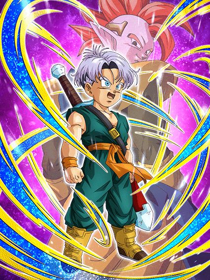
Quando os devs perceberem que cards que precisam de outros personagens tem q linkar bem, vai ser tarde demais.
Esse Trunks é um caso triste de potencial desperdiçado, pq ele tem muita coisa forte no kit e se ele tivesse só um pouquinho mais.. seria um personagem muito decente
Esse cara: Stacka ATK, tem crítico garantido, é um suporte de 40% de ATK e DEF e debuffa o inimigo
Tipo, sabe? Isso é muita coisa boa pra um card F2P mas ele é infelizmente segurado pelos stats ruins e condições horríveis
O suporte e debuffs dele só ativam se tiver um inimigo Movie Bosses, ou um Tapion no turno, que também ativa o Unit Super Attack dele que, caso tenha um Tapion no turno, dá crítico garantido
Já deu pra perceber o problema né, esse cara quer muito um Tapion no turno pra ajudar ele, mas eles obviamente não linkam bem, então praq todo esse esforço? 💀
Pra mim, se esse cara tivesse um pouquinho mais de stats e uma chance de desvio, ele seria um F2P muito melhor.. mas a gente só pode sonhar né
Meu Deus, são muitos deles.
Todos os suportes de tipo tem a passiva extremamente idêntica, então eu irei comentar sobre isso primeiro e depois falo de cada duplinha
Esses EZAs deixaram esses caras muito absurdos, já que agora o suporte deles que era de 50% de ATK e DEF aumentou pra 60%, isso é muito suporte slk
Bom, tem uma dupla pra cada cor do dokkan, ou seja, um personagem INT extreme e um INT super, e assim vai a sequência
Cada um dos cards:
Ok, vamo começar então né
")
Eles são bem paralelos.
Enquanto o Vegeta é um card bem desnecessário já que extreme INT tem 800 trilhões de cards já, o Gohan é uma boa ajuda pra cards tipo o Vegeta e Trunks, além de ganhar 50% de ATK e DEF por 9 turnos no super attack, é praticamente um stack permanente então ele pode ficar bem forte.
")
Cards de SBR.
Esses caras só tem debuffs no super attack, e o Cell até é uma boa ajuda pra extreme TEQ mas não vai muito além disso..

Pra mim os melhores.
Não só eles são buffs pra Kale, que é sempre muito bom, mas eles também tem efeitos muito fortes no super attack
O hit stacka 50% de DEF, que é muito bom, e o kyabe tem o mesmo efeito de super do gohan int, 50% de ATK e DEF por 9 turnos
Por sinal o kyabe buffa a Kefla STR.. preciso nem dizer nada né?
 - [Fierce Focused Attack] Hyper Meta-Rilldo")
A pan é incrível e eu não falo do rildo.
A pan pra mim é a segunda melhor card desses personagens (eu considero o kyabe STR o melhor), já que o efeito no super attack dela é 30% de ATK e DEF pra todos os aliados por 2 turnos, então é, ela tem um semi-suporte da Bulma LR em mãos, personagem muito forte
E o rildo é um buff pra GT BOSSES KKKKKKKKKKKKKKKKKKKKKK
Sem comentários.
 - [Dimension-Breaking Roar] Buu (Super)")
O buu é interessante.
O gohan é bem básico mas eu não sei se consideraria ele útil já que PHY tem muito orb changer já, mas ele pode ajudar o fraudehan pelo menos
E o buu não é só útil pelo suporte, mas tmb pq ele cura 20% de HP no super attack, isso é bem interessante ein
Foram todos? É isso então.
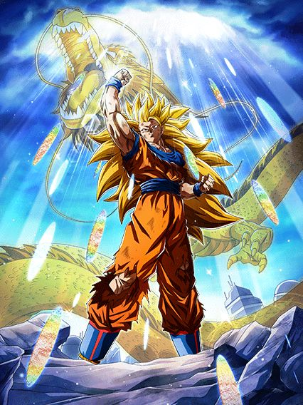
Sabe, existe o termo "canhão de vidro", que se refere a personagens que tem pouca defesa mas dão bastante dano
Bom, eu diria que esse goku é uma bomba termonuclear de vidro.
Esse goku era o LR mais antigo de todos sem um EZA, e eu devo dizer q ele ficou muito forte
Eles tentaram ao máximo fazer esse goku um card que segue a lore do filme, já que o ultra super attack dele é pra ser usado como golpe final pra de fato garantir a vitória numa luta (até pq depois disso cê se lasca um pouquinho..)
O goku tem 50% de redução de dano, e caso ele dê um ultra super attack, ele perde a redução naquele turno, tornando ele extremamente frágil contra qualquer coisa
É meio engraçado, mas esse cara tem problemas de Ki igualzinho o fraudehan, mas aqui tem motivo pra isso, já que o objetivo é evitar ao máximo usar o punho do dragão e guardar pra fase final da luta
E acredite, o punho do dragão dá MUITO dano, é sério
Esse cara vai estar mandando supers de 12 milhões no turno 1, sendo q vc tem q se preparar pra usar o punho do dragão depois
E dá pra se preparar muito bem até lá, já que esse cara stacka 50% de ATK no super attack normal e ainda builda mais 59% com 3 supers (e não, o super attack normal não remove a redução de dano)
Ele também dá crítico garantido e mais dano se estiver enfrentando um inimigo e seu HP estiver abaixo de 59% no turno 6.. eu nem preciso dizer q isso é horrível né
Enfim, ele é um card muito forte se as probabilidades estiverem contigo, já que se vc stackar muito, o dano do punho do dragão vai ser uma parada extremamente insana
Ele é frágil? Um pouco
Mas ele compensa tudo no dano slk

O cara q fez o EZA da Kefla STR voltou amigos, podem aplaudir nosso salvador.
Cara, que hype ein, esse EZA só iria vir bem depois mas adiantaram ele pro global, eu tava hypado demais pra usar ele no time do Vegeta TEQ
Enfim, o gotenks na forma base é um "desvia ou morre" perigoso, já que ele não tem muita defesa antes de atacar e só tem 50% de chance de desvio, oq é obviamente decente mas nehhh..
Enfim, o gotenks até consegue tankar depois de dar super, mas isso não importa muito pq ele tem transformação automática e no turno seguinte ele já se transforma em ssj

É essa forma q vc vai ver dele na maioria das vezes.
Bom, além do óbvio "aumentar os valores q ele tinha na forma base", o gotenks ganha buffs a mais, incluindo 70% de chance de stunar no super attack, que pode parecer inútil mas é bem útil até
E agora eu vou aproveitar pra falar do desvio do gotenks, então vamo lá
Em ssj o gotenks continua tendo 50% de chance de desviar, mas ele tem um extra, que são 20% de chance de desvio depois de desviar 1 vez, e vc deve estar pensando que com isso ele ganha 70% de chance de desvio, bom, isso tá errado
Na verdade o 50% continua sendo 50%, os 20% são uma chance separada de desvio, e apesar de parecer meio horrível, isso é até que bem forte, já que agora o gotenks tem 3 possibilidades de desviar de qualquer ataque (o desvio que ele tem base, esses 20% extras e o desvio do hidden potential, todos são chances calculadas separadamente), então a chance de ele desviar de algo querendo ou não aumenta, mas não do jeito que muitos acham.
Ok, sobre a transformação do gotenks, eu vou ser bem honesto: é uma condição horrível
Você tem q estar com mais de 70% de HP e estar no quarto turno do gotenks depois de transformar
Oq isso significa?
Você só pode se transformar em ssj3 quando passarem 4 turnos depois q ele virou ssj
O mais cedo q vc vai ter o gotenks ssj vai ser no turno 3, oq significa que ele só pode virar ssj3 no turno 7, então é, bem chatão
Uma estratégia que é bem funcional é deixar o gotenks de floater quando ele virar ssj, aí quando ele voltar a transformação já vai estar disponível
Enfim, se vc chegar nas condições, então libere o deus>

O shinigami da justiça é real.
Chegando a esse ponto o gotenks vira uma lenda, já que agora o dano e defesa dele são muito altos e fica uma coisa absurda demais
O super attack dele aumenta 50% de ATK e DEF por 4 turnos, ou seja, no primeiro turno dele ele nem tá no potencial máximo ainda, e slk, ele já é forte demais
E agora a chance de desvio dele aumentou pra 70%, o que já é desbalanceado já que ele vai estar na casa dos 800k a 900k de defesa
Além disso ele lança um super adicional garantido pra sempre, buffando ainda mais os stats dele por múltiplos turnos, e dá crítico garantido no primeiro turno da transformação, que é obviamente muito forte já q ele dá um dano do caramba (por sinal a chance de crítico fica em 50% depois desse turno, então segue sendo braba)
E é basicamente isso, o gotenks vai de um card "desvia ou morre" pra "não me importo se eu não desviar"
E hora do julgamento: Ele é melhor q a Kefla? Não.
Mas ele é o TUR com EZA n.2 do jogo, então tá mais que ótimo
Ele tem habilidades muito fortes e muito úteis em batalha, e a única coisa q segura muito ele é a demora pra se transformar, já que isso atrasa demais ele a chegar no poder total
Mas em geral, amo esse cara, obrigado global por trazerem ele adiantado.
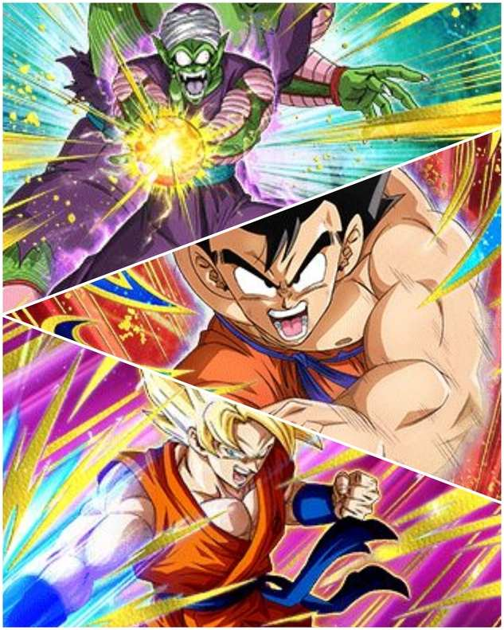
Mais um?
... mais um.
Ok, ok, tudo bem, felizmente os cards tão um pouco melhores aqui..
O majunior é um bom card de world tournament, já que ele tem 30% de chance de stunar todos os inimigos, além de ganhar mais buffs de acordo com o número de inimigos, então ehhh.. ele é alguma coisa
Ele também tem uma forma gigante que tá ali né, 10% de chance de ativar.. wow..
O goku descalço é interessante, ele tem buffs decentes e se tiver enfrentando um inimigo extreme ele tem defesa ativa, um card bem usável não ironicamente, bem aceitável
Antes de falar do goku ssj, vou aproveitar pra dizer q a arte dele é linda e eu amo esse breve momento do goku ssj com essa roupa
E sobre ele em si, ele é infelizmente um orb changer zuado, já que ele só muda orbs AGL pra STR se tiverem outros 2 Super Heroes ou Super Saiyans no time, e não é ruim, mas o problema é que ele também precisa desses orbs
Com 3 orbs STR ele tem 50% de chance de selar o inimigo e também 50% de chance de critar, e com 4 orbs ele lança um adicional com 70% de chance de ser super
Em geral, card bonito, mas restrito e mesmo que seja fácil, não o torna um card insano
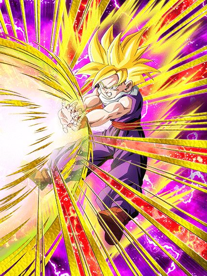
Eles conseguiram.. fizeram um EZA de world tournament bom.
Esse gohan é muito brabo e um suporte incrível em um time full Super Saiyans ou Movie Heroes, já que nesses 2 times ele tem 70% de chance de desvio, e ainda dá 30% de ATK e DEF pra todos super class, muito forte
Além disso ele stacka ATK e DEF no super attack.. é útil? Não, ele continua sendo um card desvia ou morre
Mas se vc stackar bastante, vai que ele tanka 1 ataque básico né..

Ok né.
Esse cara não é um EZA nem nada, mas ele ganhou um awakening decente então pq não comentar sobre?
Ele é bem interessante num time extreme Space-Travelling Warriors, já que se estiver no time completo ele tem 210% de ATK e DEF, dá suporte de 30% de ATK, tem 70% de chance de critar e ainda tem defesa ativa, bem forte
Parece bastante coisa mas por ele ser um card de world tournament, os stats dele são horrivelmente baixos, e por hora não tem um time bom pra usar ele, mas ele tem uma base bem forte, então achei brabo
Você chegou ao fim dessa página!
Ou talvez.. eu não tenha terminado ainda? Sei lá
Obrigado por ler tudo, e fica a vontade pra ver outras